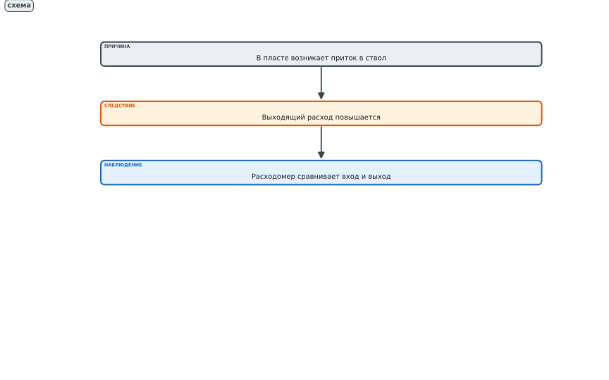
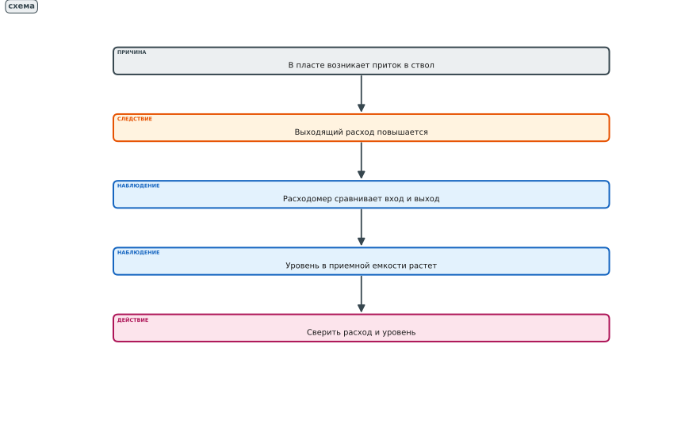

Выходящий поток — раствор, возвращающийся из скважины.
Его расход сопоставляют с подачей и уровнем в приемной емкости.
Пороговая идея. Сопоставить расход из скважины, подачу насосов и уровень емкости. модель
Анимация: как это происходит


1 / 6
Что проверять, если возврат вдруг вырос?
Допущения: Условная схема; блоки не задают временной масштаб или размеры оборудования..
Как это работает
Механизм
Приток способен увеличить скорость, а значит и расход жидкости на выходе. Дифференциальные приборы измеряют разность расходов. стр. 234
«В результате ограничения потока бурового раствора в скважине жесткими стенками поступление пластового флюида вызывает увеличение скорости, а следовательно, и расхода движущейся впереди жидкости.»
«Разность объемных скоростей на входе и выходе из скважины измеряется дифференциальными расходомерами.»
схема
Схема: зачем сверять расход с уровнем.
Класс B · схема · нарисовано кодом · стр. 234
Практика
Для описанного индикатора указан рост выходного расхода на 10 % и более. Показания расхода сопоставляют с уровнем приемной емкости. стр. 234
«На практике расход (скорость) выходящего потока бурового раствора контролируют с помощью индикатора потока, позволяющего обнаружить начавшееся проявление при превышении расхода на выходе на 10 % и более.»
«Результаты измерения расхода потока на выходе необходимо сопоставить с данными измерений уровня приемных емкостей, поскольку повышение расхода раствора приводит к увеличению уровня в емкостях.»
Цифры и условия
Для описанного индикатора указан рост выходного расхода на 10 % и более. стр. 234
Частая ошибка модель
✗Ошибка: Изменение расхода на выходе сравнивают только с предыдущим показанием.
✓На самом деле: Выходящий расход сопоставляют с подачей насосов и текущим режимом.
Что это значит для данных модель
Сопоставить расход из скважины, подачу насосов и уровень емкости.
Вход
Текст главы и контекст текущей операции
Выход
Объяснение признака или этапа
Где ломается
Один сигнал не доказывает причину без контекста.
гипотеза Показания сопоставимы только при известном режиме работ.
Где здесь ручной труд специалиста
Входные данные
Текст главы и контекст текущей операции
Ручные шаги
Сверить показания и журнал операции.
Точки суждения
Сопоставить расход из скважины, подачу насосов и уровень емкости.
Время
Данные о длительности ручной сверки в главе не приведены.
Типичные ошибки
Один сигнал не доказывает причину без контекста.
Аналогия модель
Проверка контекста события в журнале перед интерпретацией метрики.
Где аналогия перестаёт работать: События в стволе физические, а показания могут запаздывать.
Как это делается сейчас модель
За рабочими решениями обращаются к действующему регламенту и ответственному специалисту; этот узел объясняет учебный пример.
Глубже
Граница ИТ-аналогии модель
События в стволе физические, а показания могут запаздывать.
Новые понятия
Выходящий поток (return flow)
Поток раствора, возвращающийся из скважины к поверхности. модель
Все утверждения шага с дословной цитатой автора и страницей книги (по PDF).
Приток способен увеличить скорость, а значит и расход жидкости на выходе. наблюдение
«В результате ограничения потока бурового раствора в скважине жесткими стенками поступление пластового флюида вызывает увеличение скорости, а следовательно, и расхода движущейся впереди жидкости.»
«Разность объемных скоростей на входе и выходе из скважины измеряется дифференциальными расходомерами.»
Для описанного индикатора указан рост выходного расхода на 10 % и более. наблюдение
«На практике расход (скорость) выходящего потока бурового раствора контролируют с помощью индикатора потока, позволяющего обнаружить начавшееся проявление при превышении расхода на выходе на 10 % и более.»
Показания расхода сопоставляют с уровнем приемной емкости. наблюдение
«Результаты измерения расхода потока на выходе необходимо сопоставить с данными измерений уровня приемных емкостей, поскольку повышение расхода раствора приводит к увеличению уровня в емкостях.»
Исходный текст урока
Стр. 234 · 4.1.1. ПРИЗНАКИ ПРОЯВЛЕНИЙ
*Увеличение скорости потока (расхода) бурового раствора на выходе из скважины.* В результате ограничения потока бурового раствора в скважине жесткими стенками поступление пластового флюида вызывает увеличение скорости, а следовательно, и расхода движущейся впереди жидкости.
Стр. 234 · 4.1.1. ПРИЗНАКИ ПРОЯВЛЕНИЙ
Разность объемных скоростей на входе и выходе из скважины измеряется дифференциальными расходомерами. На практике расход (скорость) выходящего потока бурового раствора контролируют с помощью индикатора потока, позволяющего обнаружить начавшееся проявление при превышении расхода на выходе на 10 % и более.
Стр. 234 · 4.1.1. ПРИЗНАКИ ПРОЯВЛЕНИЙ
Результаты измерения расхода потока на выходе необходимо сопоставить с данными измерений уровня приемных емкостей, поскольку повышение расхода раствора приводит к увеличению уровня в емкостях.